Achari Khichuri / Pickled Khichdi
© 2016 Spicy World, Published on: Jan 4, 2016
'Khichuri' is a seasonal one-pot-meal. We generally enjoy it in monsoon or winter. The easiest dish of rice category is 'khichdi'. From bachelor to elder, everybody knows how to make it. But this is a tastiest variation of khichdi. 'Achar' means pickle, I used mango pickle here. The process is very simple, no need to fry or cook anything separately, everything will be cooked in one pot and one time. I made this on lunch along with some chips and fried potatoes. The combo was phenomenal and we just loved them.

Ingredients
- ½ cup of rice.
- 1/4th cup of masoor dal / red lentils.
- 1/4th cup of moong dal / yellow lentils.
- 1 onion thinly sliced.
- 2 cloves of garlic roughly chopped.
- 4 green chilies.
- Tempering (1 Teaspoon panchforon, 1 dry red chilli).
- Spice powder (1 Teaspoon turmeric powder, 1 Teaspoon red chilli powder, 1 Teaspoon garam masala powder and ½ Teaspoon cumin powder).
- 3 Tablespoons of mustard oil.
- 2 Tablespoons of mango pickle.
- Some green peas.
- Salt and sugar.
- Warm water.

Steps
Take the rice and 2 types of lentils in a bowl.
Wash them properly with water.
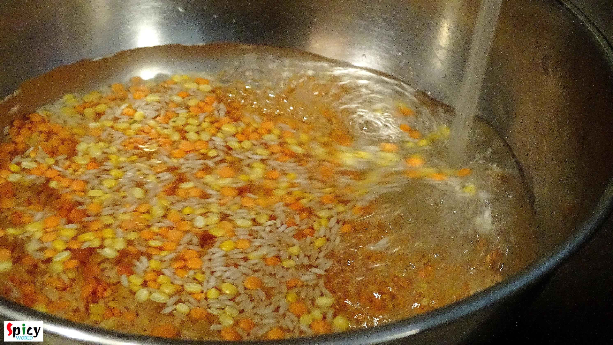
Add onion, garlic and all the above mentioned spice powder in that bowl.
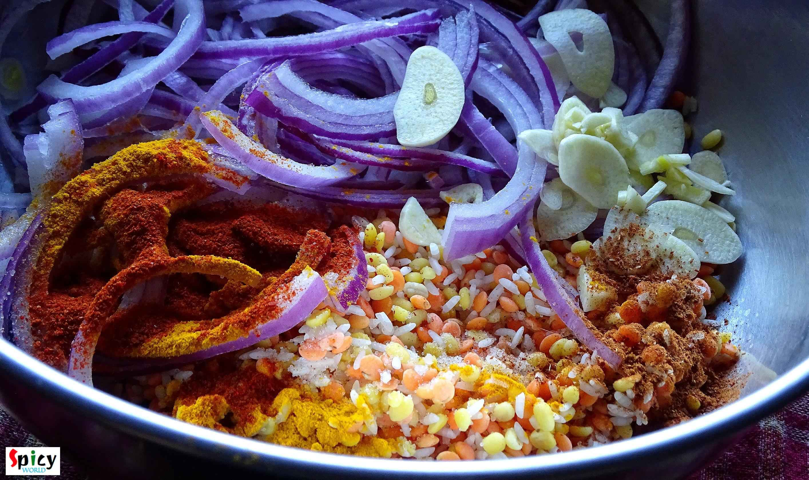
Then add 2 Tablespoons of mustard oil and little salt.
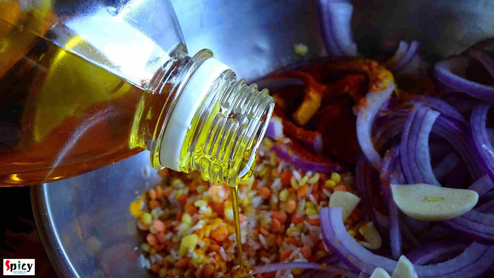
Mix everything very well with your hand and keep it for 15 minutes.
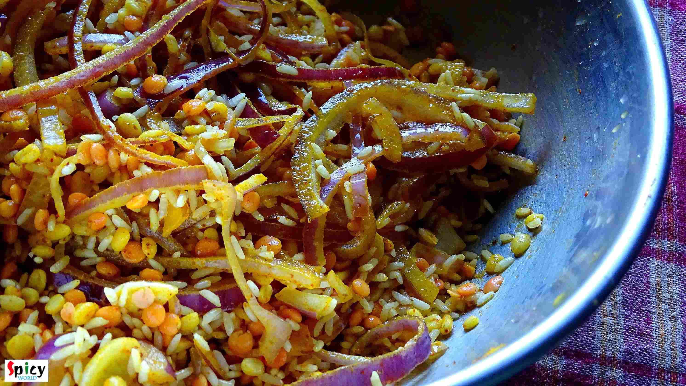
Then heat 1 Tablespoon of mustard oil in a pan.
Add panchforon and dry red chilli. Saute them for 20 seconds.
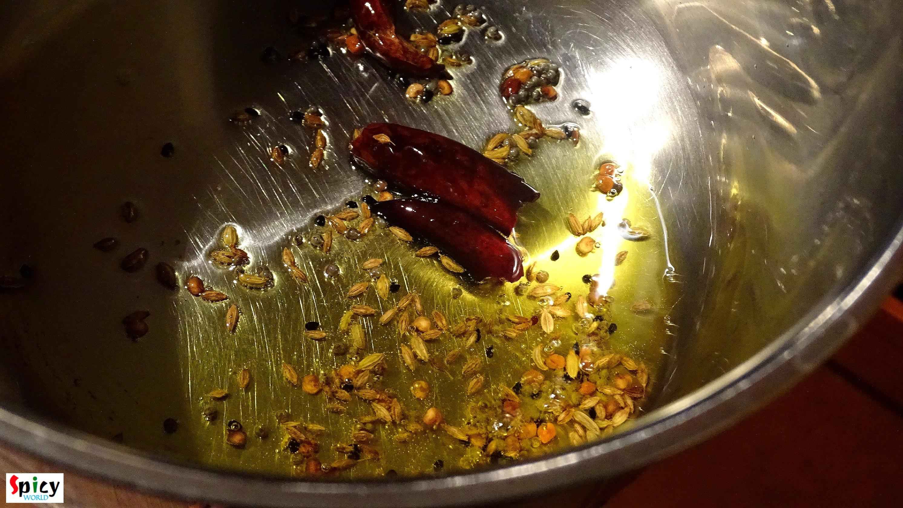
Add the rice and lentils mixture in the hot oil. Mix it well for 3 minutes.
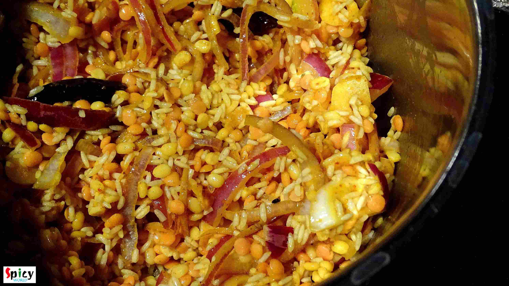
Then add 2 cups of warm water and enough salt. Mix it.
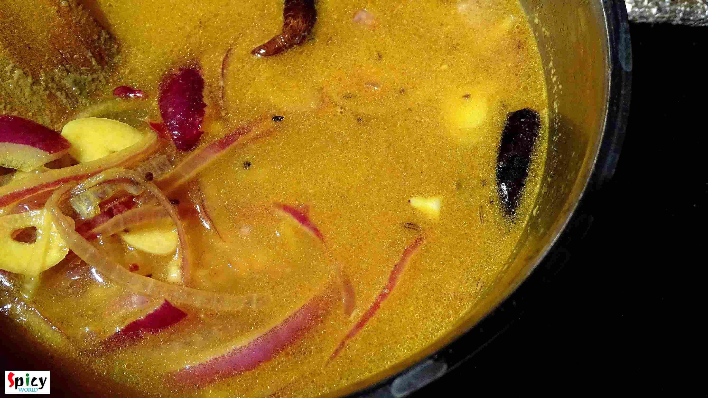
Add green chilies, green peas and pinch of sugar. Mix it.
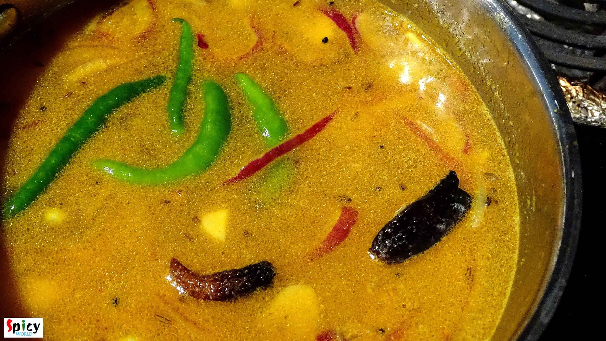
First keep the heat on high, let the water comes to a boil.
After it starts boiling, turn the heat on low, cover the pan and cook it for 15-20 minutes.
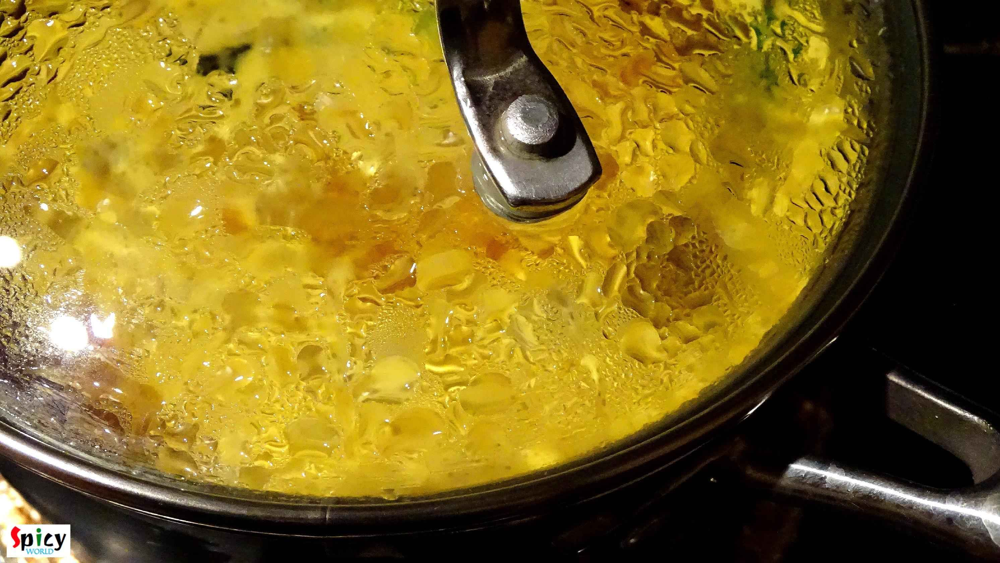
When everything becomes soft, add the mango pickel. Mix it and cook for another 5 minutes.
Pickel should be sour in taste, not sweet.
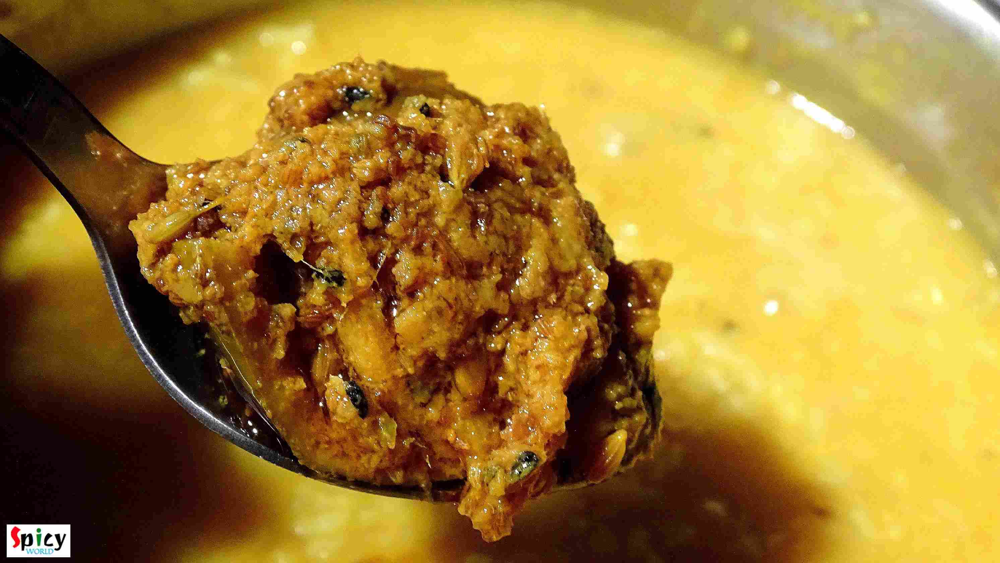
After 5 minutes turn off the heat and let it rest for 2 minutes, then serve.
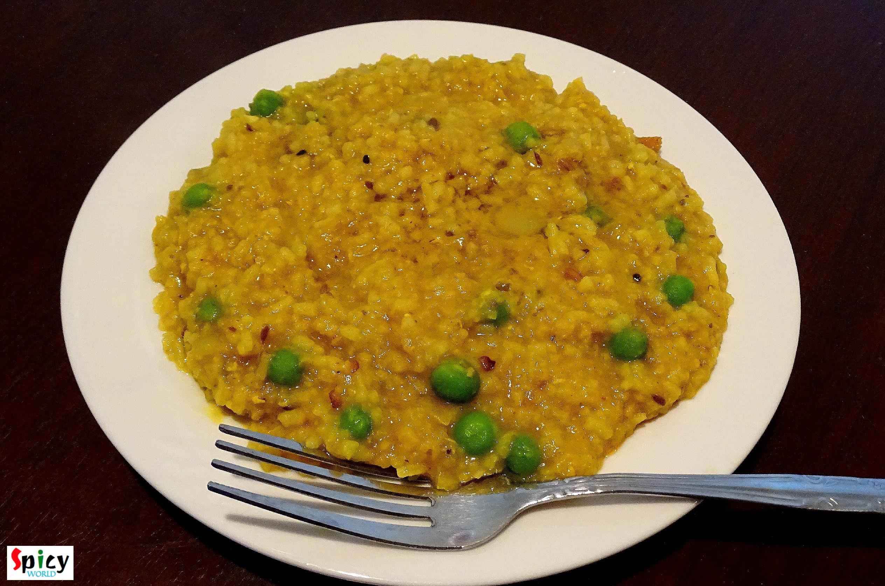
Your Achar khichdi is ready ...
- Enjoy this hot with a dallop of ghee on top ...
")